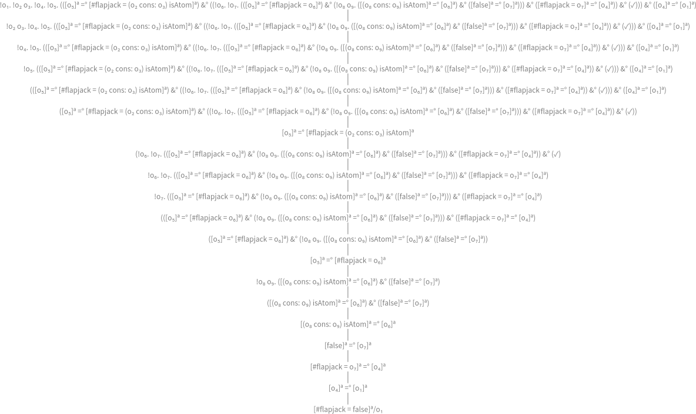

The Little Prover¶
This is an annotated version of [FE15], with examples coded in Smalltalk on top of the logic language µKanren. To drive the reader through the text, please keep in mind that the main flow is taken from the original text, the smallest amount of text to give it sense and I don’t deserve any merit for that. My own notes and additions will be emphasized in note boxes. Therefore, if you would like to stick to the book be free to skip notes, otherwise dig into them to get a deeper understanding of what’s new from our side.
Old Games, New Rules¶
What is (#ham cons: (#eggs cons: nil)) equal to?
"TheLittleProverTest, protocol tests"
test_chapter_01_OldGamesNewRules_frame_06
"(car (cons 'ham '(eggs)))"
self assert: (#ham cons: (#eggs cons: nil)) car equals: #ham
What value is the expression nil isAtom equal to?
"TheLittleProverTest, protocol tests"
test_chapter_01_OldGamesNewRules_frame_11
"(atom '())"
self assert: nil isAtom equals: true
Can we find a value for the expression (#ham cons: (#eggs cons: nil)) isAtom?
"TheLittleProverTest, protocol tests"
test_chapter_01_OldGamesNewRules_frame_14
"(atom (cons 'ham '(eggs)))"
self assert: (#ham cons: (#eggs cons: nil)) isAtom equals: false
Note
The selector #isAtom has two implementors, both
"Object, protocol *Collections-Sequenceable-Cons"
isAtom
^ true
and
"Cons, protocol testing"
isAtom
^ false
respectively. The latter is implemented in
Object subclass: #Cons
instanceVariableNames: 'car cdr'
classVariableNames: ''
package: 'Collections-Sequenceable-Cons'
that can be instantiated with
"Object, protocol *MicroKanren-core"
cons: anObj
^ anObj consedObject: self
"Object, protocol *Collections-Sequenceable-Cons"
consedObject: car
^ Cons car: car cdr: self
No matter what values the variables a and b have, the expression a
cons: b cannot produce an object c such that c isAtom evaluates to
true,
"TheLittleProverTest, protocol tests"
test_chapter_01_OldGamesNewRules_frame_16
| aGoal |
aGoal := [ :rewrite |
[ :ast |
[ :a :b |
theory isAtomConsº value: ast value: rewrite asRBNode ] ]
asGoalWithUnaryASTof: [ :a :b | (a cons: b) isAtom ]
contextVariables: Dictionary empty ] asGoal.
self
assert: aGoal solutions asArray
equals: { false asLiteralRBNode }.
^ self exportComputationTreeOfGoal: aGoal limitedTo: -1

where
"TheLittleProver, protocol predicates" isAtomConsº "(dethm atom/cons (x y) (equal (atom (cons x y)) 'nil))" ^ [ :x :y | (x cons: y) isAtom ] <~~> [ :x :y | false ]
Note
Wait. Many new things pop up here, so digest one at the time. In order of occurrence:
the message
"BlockClosure, protocol *MicroKanren-RB" asGoalWithUnaryASTof: aBlock contextVariables: aCollection ^ self asGoalWithASTof: aBlock contextVariables: aCollection select: [ :aSequenceNode | aSequenceNode statements in: [ :statements | statements size = 1 ifTrue: [ statements first ] ifFalse: [ Error signal: ('Assumption that {} has 1 statement only is violated.' format: { aSequenceNode }) ] ] ]
forwards, after ensuring that
aBlockhas exactly one statement, to"BlockClosure, protocol *MicroKanren-RB" asGoalWithASTof: aBlock contextVariables: aCollection select: selectBlock ^ FreshRB new receiver: aBlock; nodeBlock: self; selectBlock: selectBlock; contextVariables: aCollection; yourself
in order to produce a
FreshRBgoal that, overriding the message"FreshRB, protocol dispatched" onState: aState withVars: aCollection | dict node rbLogicVariables | dict := Dictionary new. contextVariables do: [ :each | dict at: each name put: each ]. rbLogicVariables := receiver argumentNames with: aCollection collect: [ :aName :aVar | dict at: aName ifPresent: [ Error signal: ('Variable {} duplicated!' format: { aName }) ] ifAbsentPut: [ aVar asRBNode ] ]. node := receiver sourceNode body in: [ :aSequenceNode | | aNode | aNode := selectBlock value: aSequenceNode. aNode substituteVariablesUsingDictionary: dict ]. receiver := nodeBlock value: node. ^ super onState: aState withVars: rbLogicVariables
has the responsibility to lift block’s code variables
"RBNode, protocol *MicroKanren-RB" substituteVariablesUsingDictionary: aDict ^ self acceptVisitor: (RBProgramNodeSubstitutionVisitor new substitution: aDict; yourself)
"RBProgramNodeSubstitutionVisitor, protocol visiting" visitTemporaryNode: aNode ^ aNode isVariable ifTrue: [ (substitution at: aNode name) copy parent: aNode parent; yourself "Here assume to talk with RBLogicVariable objs." ] ifFalse: [ aNode ]
to
RBNodeobjects that support unificationRBVariableNode subclass: #RBLogicVariableNode instanceVariableNames: 'logicVar' classVariableNames: '' package: 'MicroKanren-RB'
via
"Var, protocol *MicroKanren-RB" asRBNode ^ RBLogicVariableNode named: named logicVar: self
lying on
Vareventually.the message
"Object, protocol *MicroKanren-RB" asLiteralRBNode ^ self isLiteral ifTrue: [ RBLiteralValueNode value: self ] ifFalse: [ Error signal: 'I am not a literal value' ]
allows us to lift a literal value to a literal node.
the message
"BlockClosure, protocol *MicroKanren-RB" <~~> aBlock ^ [ :a :b | [ :ast | [ :x :y | | z | z := aBlock substituteVariablesUsingSequenceableCollection: (Array with: x with: y). (ast unifyo value: a) , (z unifyo value: b) ] ] asGoalWithUnaryASTof: self contextVariables: #( ) ]
is syntactic sugar to define a rewriting rule upto α-conversion over names of variables of both blocks, implemented in
"BlockClosure, protocol *MicroKanren-RB" substituteVariablesUsingSequenceableCollection: rbVariables ^ self unaryRBNode substituteVariablesUsingDictionary: (self argumentNames with: rbVariables collect: #->) asDictionary
Such conversion if helpful to be free to use arbitrary names during a rewriting, as in
TheLittleProver>>#carConsºfor example.
As usual in logic, we can run a computation backward. The following test case
shows how to use #isAtomConsº to generate the receiver of #isAtom under
the constraint that the whole expression yields false when evaluated:
"TheLittleProverTest, protocol tests"
test_chapter_01_OldGamesNewRules_frame_16_backward
| aGoal node |
aGoal := [ :ast |
[ :a |
theory isAtomConsº value: ast value: false asLiteralRBNode ] ]
asGoalWithUnaryASTof: [ :a | a isAtom ]
contextVariables: Dictionary empty.
node := [ :a :b | a cons: b ]
substituteVariablesUsingSequenceableCollection: {
0 asReifiedVar asRBNode.
1 asReifiedVar asRBNode }.
self
assert: aGoal solutions asArray equals: { node };
assert: node formattedCode equals: '•₀ cons: •₁'
Note
Since a CompiledMethod responds to
"CompiledMethod, protocol *opalcompiler-core"
sourceNode
^ self ast
the initial test
TheLittleProverTest>>#test_chapter_01_OldGamesNewRules_frame_16_byBlockClosure
can also be written as
"TheLittleProverTest, protocol tests"
test_chapter_01_OldGamesNewRules_frame_16_byCompiledMethod
| aGoal |
aGoal := [ :rewrite |
[ :ast | self consº: ast isAtomº: rewrite asRBNode ]
asGoalWithUnaryASTof: self class >> #consª:isAtomª:
contextVariables: #( ) ] asGoal.
self
assert: aGoal solutions asArray
equals: { false asLiteralRBNode }
where, on one hand, code as data is
"TheLittleProverTest, protocol code as data"
consª: a isAtomª: b
(a cons: b) isAtom
on the other hand, the rewriting is
"TheLittleProverTest, protocol predicates"
consº: ast isAtomº: rewritten
^ [ :a :b | theory isAtomConsº value: ast value: rewritten ]
Observe that the previous two messages allow us to establish a nomenclature
for when we use a CompiledMethod both for its source code and for
evaluating (a predicate BlockClosure in this case) by appending a ª
and º to each keyword in the selector, respectively. This scheme has the
advantage to use the same words while being able to discriminate their usage.
We mix the two approaches freely from now on.
We want to focus on (a cons: b) isAtom in the context of the outer #= message send
"TheLittleProverTest, protocol tests"
test_chapter_01_OldGamesNewRules_frame_19
| aGoal |
aGoal := [ :rewritten |
[ :ast |
[ :a :b |
ast
acl: [ :prover |
prover
focus: [ :o | #flapjack = o ]
do: theory isAtomConsº ]
then: [ :ast1 :ast2 |
theory unifyº value: ast2 value: rewritten asRBNode ]
contextVariables: Dictionary empty ] ]
asGoalWithUnaryASTof: [ :a :b |
#flapjack = (a cons: b) isAtom ]
contextVariables: Dictionary empty ] asGoal.
self
assert: aGoal solutions asArray
equals: { [ #flapjack = false ] unaryRBNode }

Note
The message
"BlockClosure, protocol *MicroKanren-RB"
unaryRBNode
^ self sourceNode body statements in: [ :statements |
statements size = 1
ifTrue: [ statements first ]
ifFalse: [
Error signal:
('Assumption that {} has 1 statement only is violated.'
format: { self }) ] ]
is helpful to use a BlockClosure object as a container of its own code.
Precisely. In that case, what value is #flapjack = false equal to?
"TheLittleProverTest, protocol tests"
test_chapter_01_OldGamesNewRules_frame_21
| aGoal |
aGoal := [ :rewritten |
[ :ast |
[ :a :b |
ast
acl: [ :prover |
prover
focus: [ :o | #flapjack = o ] do: theory isAtomConsº;
focus: [ :o | o ] do: self flapjackNilFalseº ]
then: [ :ast1 :ast2 :ast3 |
theory unifyº value: ast3 value: rewritten asRBNode ]
contextVariables: Dictionary empty ] ]
asGoalWithUnaryASTof: [ :a :b |
#flapjack = (a cons: b) isAtom ]
contextVariables: Dictionary empty ] asGoal.
self
assert: aGoal solutions asArray
equals: { false asLiteralRBNode }
where
"TheLittleProverTest, protocol predicates" flapjackNilFalseº ^ [ :_ | #flapjack = false ] <~> [ :_ | false ]
What value is the expression ((p cons: q) car cons: nil) cdr isAtom equal to?
"TheLittleProverTest, protocol tests"
test_chapter_01_OldGamesNewRules_frame_28
| aGoal |
aGoal := [ :rewritten |
[ :ast |
[ :a :b |
ast
acl: [ :prover |
prover
focus: [ :o | (o cons: nil) cdr isAtom ]
do: theory carConsº;
focus: [ :o | o isAtom ] do: theory cdrConsº;
focus: [ :o | o ] do: theory isAtomNilº ]
then: [ :ast1 :ast2 :ast3 :ast4 |
theory unifyº value: ast4 value: rewritten asRBNode ]
contextVariables: Dictionary empty ] ]
asGoalWithUnaryASTof: [ :p :q |
((p cons: q) car cons: nil) cdr isAtom ]
contextVariables: Dictionary empty ] asGoal.
self assert: aGoal solutions asArray equals: { true asLiteralRBNode }
where
"TheLittleProver, protocol predicates" carConsº "(dethm car/cons (x y) (equal (car (cons x y)) x))" ^ [ :x :y | (x cons: y) car ] <~~> [ :a :b | a ]"TheLittleProver, protocol predicates" cdrConsº "(dethm cdr/cons (x y) (equal (cdr (cons x y)) y))" ^ [ :x :y | (x cons: y) cdr ] <~~> [ :x :y | y ]"TheLittleProver, protocol predicates" isAtomNilº " (dethm atom/nil (x y) (equal (atom 'nil) 't))" ^ [ :_ | nil isAtom ] <~> [ :_ | true ]
That took three steps. Can we do it in fewer?
"TheLittleProverTest, protocol tests"
test_chapter_01_OldGamesNewRules_frame_32
| aGoal |
aGoal := [ :rewritten |
[ :ast |
[ :a :b |
ast
acl: [ :prover |
prover
focus: [ :o | o isAtom ] do: theory cdrConsº;
focus: [ :o | o ] do: theory isAtomNilº ]
then: [ :ast1 :ast2 :ast3 |
theory unifyº value: ast3 value: rewritten asRBNode ]
contextVariables: Dictionary empty ] ]
asGoalWithUnaryASTof: [ :p :q |
((p cons: q) car cons: nil) cdr isAtom ]
contextVariables: Dictionary empty ] asGoal.
self assert: aGoal solutions asArray equals: { true asLiteralRBNode }
What is the value of the context ((x cons: y) = (x cons: y) cons: (#and cons:
(#crumpets cons: nil))) car with focus on (x cons: y) = (x cons: y)?
"TheLittleProverTest, protocol tests"
test_chapter_01_OldGamesNewRules_frame_44
| aGoal |
aGoal := [ :rewritten |
[ :ast |
[ :a :b |
ast
acl: [ :rewrite |
rewrite
focus: [ :o |
(o cons: (#and cons: (#crumpets cons: nil))) car ]
do: theory equalSameº ]
then: [ :ast1 :ast2 |
theory unifyº value: ast2 value: rewritten asRBNode ]
contextVariables: Dictionary empty ] ]
asGoalWithUnaryASTof: [ :x :y |
((x cons: y) = (x cons: y) cons:
(#and cons: (#crumpets cons: nil))) car ]
contextVariables: Dictionary empty ] asGoal.
self
assert: aGoal solutions asArray
equals:
{ [ (true cons: (#and cons: (#crumpets cons: nil))) car ]
unaryRBNode }
And, of course, the second step is easy.
"TheLittleProverTest, protocol tests"
test_chapter_01_OldGamesNewRules_frame_46
| aGoal |
aGoal := [ :rewritten |
[ :ast |
[ :a :b |
ast
acl: [ :rewrite |
rewrite
focus: [ :o |
(o cons: (#and cons: (#crumpets cons: nil))) car ]
do: theory equalSameº.
rewrite focus: [ :o | o ] do: theory carConsº ]
then: [ :ast1 :ast2 :ast3 |
theory unifyº value: ast3 value: rewritten asRBNode ]
contextVariables: Dictionary empty ] ]
asGoalWithUnaryASTof: [ :x :y |
((x cons: y) = (x cons: y) cons:
(#and cons: (#crumpets cons: nil))) car ]
contextVariables: Dictionary empty ] asGoal.
self assert: aGoal solutions asArray equals: { true asLiteralRBNode }
Note
Please note that #equalSameº also binds variables during its evaluation
"TheLittleProverTest, protocol tests"
test_chapter_01_OldGamesNewRules_frame_46_variablesBindingByEqualSameº
| aGoal |
aGoal := [ :rewritten |
[ :ast |
[ :car :cdr |
[ :r |
| g1 g2 |
g1 := theory equalSameº value: ast value: r asRBNode.
g2 := rewritten asRBNode unifyo value:
(RBMessageNode
receiver: car
selector: #cons:
arguments: { cdr }).
g1 , g2 ] asGoal ] ]
asGoalWithUnaryASTof: [ :a :d |
(#and cons: d) = (a cons: nil) ]
contextVariables: Dictionary empty ] asGoal.
self
assert: aGoal solutions asArray
equals: { [ #and cons: nil ] unaryRBNode }
morever, variables binding can be performed manually as in
"TheLittleProverTest, protocol tests"
test_chapter_01_OldGamesNewRules_frame_46_variablesBindingManually
| aGoal |
aGoal := [ :rewritten |
[ :ast |
[ :a :b |
(rewritten asRBNode unifyo value:
(RBMessageNode receiver: a selector: #even))
, ((RBLiteralValueNode value: 3) unifyo value: a) ] ]
asGoalWithUnaryASTof: [ :a :b | a + b ]
contextVariables: Dictionary empty ] asGoal.
self
assert: aGoal solutions
equals: { [ 3 even ] unaryRBNode }
modulo: #asOrderedCollection
Does the order of the arguments to #= matter?
"TheLittleProverTest, protocol tests"
test_chapter_01_OldGamesNewRules_frame_49
| aGoal node |
aGoal := [ :rewritten |
[ :ast |
[ :a :b |
ast
acl: [ :rewrite |
rewrite focus: [ :o | o ] do: theory equalSwapº ]
then: [ :ast1 :ast2 |
theory unifyº value: ast2 value: rewritten asRBNode ]
contextVariables: Dictionary empty ] ]
asGoalWithUnaryASTof: [ :x :y |
(x cons: y) = (#bagels cons: (#and cons: (#lox cons: nil))) ]
contextVariables: Dictionary empty ] asGoal.
node := RBMessageNode
receiver:
[ #bagels cons: (#and cons: (#lox cons: nil)) ] unaryRBNode
selector: #=
arguments: { (RBMessageNode
receiver: 0 asReifiedVar asRBNode
selector: #cons:
arguments: { 1 asReifiedVar asRBNode }) }.
self
assert: aGoal solutions asArray equals: { node };
assert: node formattedCode
equals:
'(#bagels cons: (#and cons: (#lox cons: nil))) = (•₀ cons: •₁)'
where
"TheLittleProver, protocol predicates" equalSwapº "(dethm equal-swap (x y) (equal (equal x y) (equal y x)))" ^ [ :x :y | x = y ] <~~> [ :x :y | y = x ]
What else the context y cons: (x cdr cons: y car) car = (x isAtom = false)
equal to with focus on (x cdr cons: y car) car according to #carConsº?
Recall that “is equal to” works in both directions.
"TheLittleProverTest, protocol tests"
test_chapter_01_OldGamesNewRules_frame_55
| aGoal node |
aGoal := [ :rewritten |
[ :ast |
[ :a :b |
ast
acl: [ :rewrite |
rewrite
focus: [ :o | b cons: o = (a isAtom = false) ]
do: [ :o :r | theory carConsº value: r value: o ] ]
then: [ :ast1 :ast2 |
theory unifyº value: ast2 value: rewritten asRBNode ]
contextVariables: (Dictionary new
at: #a put: a;
at: #b put: b;
yourself) ] ]
asGoalWithUnaryASTof: [ :x :y |
y cons: (x cdr cons: y car) car = (x isAtom = false) ]
contextVariables: Dictionary empty ] asGoal.
node := self expectedRBNode_chapter_01_frame_55.
self
assert: aGoal solutions asArray equals: { node };
assert: node formattedCode equals: '•₀ cons:
((•₁ cdr cons: •₀ car) car cons: •₂) car = (•₁ isAtom = false)'
Can we use TheLittleProver>>#carConsº, then
TheLittleProver>>#isAtomConsº and finally then
TheLittleProver>>#cdrConsº? And what value is the final expression equal to?
"TheLittleProverTest, protocol tests"
test_chapter_01_OldGamesNewRules_frame_56
| aGoal node |
aGoal := [ :rewritten |
[ :ast |
[ :x :y :a :b :c |
ast
acl: [ :rewrite |
rewrite
focus: [ :o | y cons: o = (x isAtom = false) ]
do: [ :o :r | theory carConsº value: r value: o ].
rewrite
focus: [ :o |
y cons:
((x cdr cons: y car) car cons: (#oats cons: nil)) car
= (x isAtom = o) ]
do: [ :o :r | theory isAtomConsº value: r value: o ].
rewrite
focus: [ :o |
y cons:
((x cdr cons: y car) car cons: (#oats cons: nil)) car
= (x isAtom = (o isAtom cons: (a cons: b) = c) isAtom) ]
do: [ :o :r | theory cdrConsº value: o value: r ].
rewrite
focus: [ :o |
y cons:
((x cdr cons: y car) car cons: (#oats cons: nil)) car
= (x isAtom = (b isAtom cons: o) isAtom) ]
do: [ :o :r | theory equalSwapº value: o value: r ] ]
then: [ :ast1 :ast2 :ast3 :ast4 :ast5 |
theory unifyº value: ast5 value: rewritten asRBNode ]
contextVariables: (Dictionary new
at: #x put: x;
at: #y put: y;
at: #a put: a;
at: #b put: b;
at: #c put: c;
yourself) ] ]
asGoalWithUnaryASTof: [ :x :y :a :b :c |
y cons: (x cdr cons: y car) car = (x isAtom = false) ]
contextVariables: Dictionary empty ] asGoal.
node := self expectedRBNode_chapter_01_frame_56.
self
assert: aGoal solutions asArray equals: { node };
assert: node formattedCode
equals:
'•₀ cons: ((•₁ cdr cons: •₀ car) car cons: (#oats cons: nil)) car
= (•₁ isAtom = (•₂ isAtom cons: •₃ = (•₄ cons: •₂)) isAtom)'
That is a good question. We do not know, but we have had fun playing with it so far!
Even Older Games¶
What is this expression obviously equal to?
"TheLittleProverTest, protocol tests"
test_chapter_02_EvenOlderGames_frame_05
| aGoal |
aGoal := [ :rewritten |
[ :ast |
[ :a :c |
ast
acl: [ :prover |
prover focus: [ :o | o ] do: theory ifSameº ]
then: [ :ast1 :ast2 |
theory unifyº value: ast2 value: rewritten asRBNode ]
contextVariables: Dictionary empty ] ]
asGoalWithUnaryASTof: [ :a :c |
a
ifTrue: [ 3 ]
ifFalse: [ c ] ]
contextVariables: Dictionary empty ] asGoal.
self assert: aGoal solutions asArray equals: { 3 asLiteralRBNode }
where
"TheLittleProver, protocol predicates" ifSameº "(dethm cdr/cons (x y) (equal (cdr (cons x y)) y))" ^ [ :x :y | x ifTrue: [ y ] ifFalse: [ y ] ] <~~> [ :x :y | y ]
If TheLittleProver>>#ifSameº can start with an if expression and
end with a variable, then it must also be able to start with a variable and
end with an if expression. So … what else is c equal to, according to
TheLittleProver>>#ifSameº?
"TheLittleProverTest, protocol tests"
test_chapter_02_EvenOlderGames_frame_07
| aGoal node |
aGoal := [ :rewritten |
[ :ast |
[ :a :c |
ast
acl: [ :prover |
prover
focus: [ :o | o ]
do: [ :o :r | theory ifSameº value: r value: o ] ]
then: [ :ast1 :ast2 |
theory unifyº value: ast2 value: rewritten asRBNode ]
contextVariables: Dictionary empty ] ]
asGoalWithUnaryASTof: [ :a :c |
(3 cons: nil) isAtom
ifTrue: [ a ]
ifFalse: [ c ] ]
contextVariables: Dictionary empty ] asGoal.
node := self expectedRBNode_chapter_02_frame_7.
self
assert: aGoal solutions asArray equals: { node };
assert: node formattedCode equals: '•₀
ifTrue: [
(3 cons: nil) isAtom
ifTrue: [ •₁ ]
ifFalse: [ •₂ ] ]
ifFalse: [
(3 cons: nil) isAtom
ifTrue: [ •₁ ]
ifFalse: [ •₂ ] ]'
Does the question message a = true tell us anything about the focus nil = nil ifTrue: [ a ] ifFalse: [ b ]?
"TheLittleProverTest, protocol tests"
test_chapter_02_EvenOlderGames_frame_15
| aGoal node |
aGoal := [ :rewritten |
[ :ast |
[ :a :b :c |
ast
acl: [ :prover |
prover
focus: [ :o |
(a = true
ifTrue: [
o
ifTrue: [ a ]
ifFalse: [ b ] ]
ifFalse: [ #or = (#black cons: (#coffee cons: nil)) ])
ifTrue: [ c ]
ifFalse: [ c ] ]
do: theory equalSameº.
prover
focus: [ :o |
(a = true
ifTrue: [ o ]
ifFalse: [ #or = (#black cons: (#coffee cons: nil)) ])
ifTrue: [ c ]
ifFalse: [ c ] ]
do: theory ifTrueº.
prover
focus: [ :o |
(a = true
ifTrue: [ o ]
ifFalse: [ #or = (#black cons: (#coffee cons: nil)) ])
ifTrue: [ c ]
ifFalse: [ c ] ]
do: theory equalIfº ]
then: [ :ast1 :ast2 :ast3 :ast4 |
theory unifyº value: ast4 value: rewritten asRBNode ]
contextVariables: (Dictionary new
at: #a put: a;
at: #b put: b;
at: #c put: c;
yourself) ] ]
asGoalWithUnaryASTof: [ :a :b :c |
(a = true
ifTrue: [
nil = nil
ifTrue: [ a ]
ifFalse: [ b ] ]
ifFalse: [ #or = (#black cons: (#coffee cons: nil)) ])
ifTrue: [ c ]
ifFalse: [ c ] ]
contextVariables: Dictionary empty ] asGoal.
node := self expectedRBNode_chapter_02_frame_12.
self
assert: aGoal solutions asArray equals: { node };
assert: node formattedCode equals: '(•₀ = true
ifTrue: [ true ]
ifFalse: [ #or = (#black cons: (#coffee cons: nil)) ])
ifTrue: [ •₁ ]
ifFalse: [ •₁ ]'
where
"TheLittleProver, protocol predicates" ifTrueº "(dethm cdr/cons (x y) (equal (cdr (cons x y)) y))" ^ [ :x :y | true ifTrue: [ x ] ifFalse: [ y ] ] <~~> [ :x :y | x ]
and
"TheLittleProver, protocol predicates" equalIfº ^ [ :a :b | [ :c :d :e | | ancestor | ancestor := [ a = c ifTrue: [ d ] ifFalse: [ e ] ] unaryRBNode substituteVariablesUsingDictionary: (Dictionary new at: #a put: a; at: #c put: c asRBNode; at: #d put: d asRBNode; at: #e put: e asRBNode; yourself). (self ancestorº value: a value: ancestor) , (self unifyº value: c asRBNode value: b) ", (self unifyº value: 3 asLiteralRBNode value: d asRBNode) " ", ((self unifyº value: a value: d asRBNode) | (self ancestorº value: a value: d asRBNode)) " ] asGoal ]
respectively.